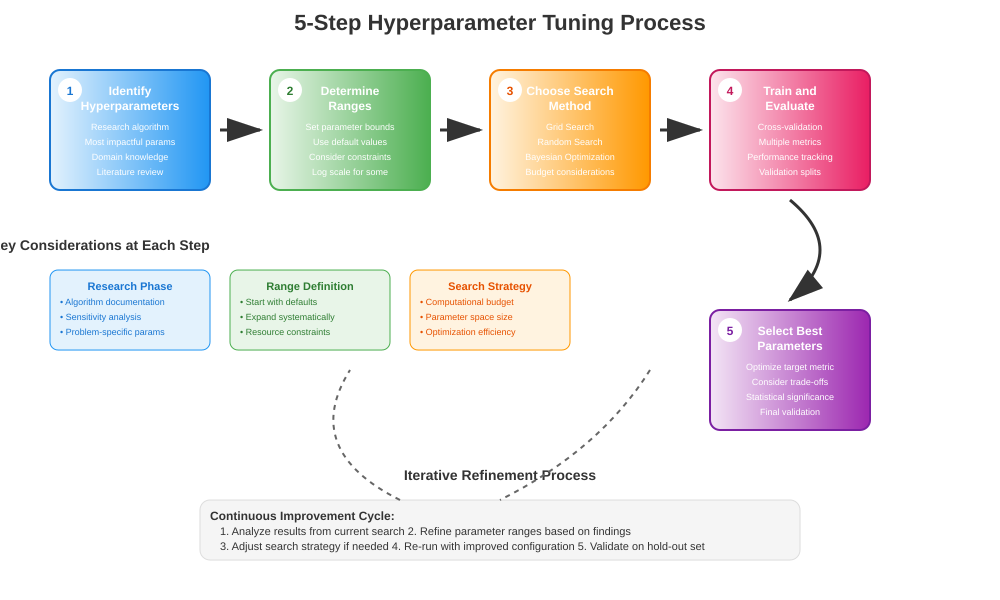
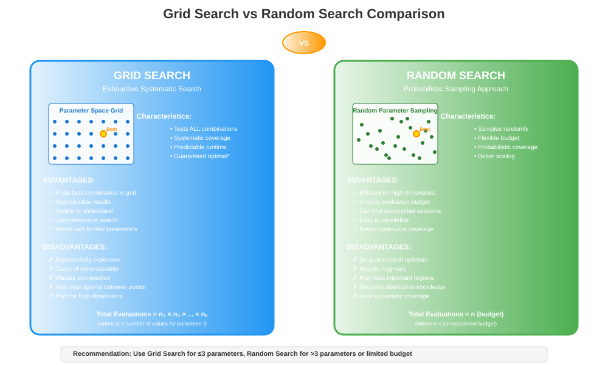

Hyperparameter Tuning for Machine Learning Models
🧭 Quick Navigation
- Introduction to Hyperparameter Tuning
- Types of Hyperparameters
- Hyperparameter Tuning Process
- Search Methods
- Model Evaluation Metrics
- Practical Implementation
- Best Practices
- References & Further Reading
📋 Introduction to Hyperparameter Tuning
Hyperparameter tuning is the process of finding the optimal configuration of hyperparameters for a machine learning model to achieve the best performance on a given dataset. Unlike model parameters that are learned during training, hyperparameters are set before the training process begins and control the learning algorithm's behavior.

Why Hyperparameter Tuning Matters
Hyperparameter tuning can significantly impact model performance by:
- Improving Accuracy: Finding optimal hyperparameters can reduce prediction errors
- Preventing Overfitting: Proper regularization parameters help generalize better
- Optimizing Training Time: Efficient hyperparameters can speed up convergence
- Enhancing Model Robustness: Well-tuned models perform consistently across different datasets
Key Concepts
- Hyperparameters: Configuration settings external to the model (e.g., learning rate, tree depth)
- Parameters: Internal model weights learned from data during training
- Validation: Process of evaluating different hyperparameter combinations
- Cross-Validation: Technique to assess model performance across multiple data splits
🎛️ Types of Hyperparameters
Understanding different types of hyperparameters is crucial for effective tuning strategies.

Tree-Based Models
Decision Trees, Random Forest, Gradient Boosting:
- Number of Estimators: Number of trees in ensemble methods
- Max Depth: Maximum depth of individual trees
- Min Samples Split: Minimum samples required to split an internal node
- Min Samples Leaf: Minimum samples required at a leaf node
- Max Features: Number of features to consider for best split
Boosting Models
AdaBoost, Gradient Boosting, XGBoost:
- Learning Rate: Step size shrinkage to prevent overfitting
- Number of Estimators: Number of boosting stages
- Subsample: Fraction of samples used for fitting base learners
- Max Depth: Maximum depth of individual base learners
- Regularization Parameters: L1 and L2 regularization terms
Neural Networks
Deep Learning Models:
- Learning Rate: Controls optimization step size
- Batch Size: Number of samples per gradient update
- Number of Layers: Depth of the neural network
- Number of Neurons: Width of hidden layers
- Dropout Rate: Regularization technique to prevent overfitting
Support Vector Machines
SVM Models:
- C Parameter: Regularization parameter controlling margin flexibility
- Kernel Type: Linear, polynomial, RBF, or custom kernels
- Gamma: Kernel coefficient for RBF, polynomial kernels
- Degree: Degree for polynomial kernel functions
🔄 Hyperparameter Tuning Process
The systematic approach to hyperparameter tuning involves five essential steps:

Step 1: Identify the Hyperparameters
Before tuning, identify which hyperparameters have the most significant impact on model performance:
- Research Literature: Review papers on your specific algorithm
- Domain Knowledge: Understand which parameters affect your problem type
- Sensitivity Analysis: Test individual parameter impact
- Feature Engineering Dependencies: Consider how features interact with parameters
Step 2: Determine the Range of Values
Establish reasonable ranges for each hyperparameter:
- Literature Review: Use ranges suggested in research papers
- Default Values: Start with algorithm defaults and expand ranges
- Log Scale: Use logarithmic scales for parameters like learning rates
- Domain Constraints: Consider computational and memory limitations
Example Ranges:
param_ranges = {
'n_estimators': [50, 100, 200, 500],
'max_depth': [3, 5, 10, 15, None],
'min_samples_split': [2, 5, 10, 20],
'min_samples_leaf': [1, 2, 4, 8],
'max_features': ['sqrt', 'log2', 0.5, 0.8, 1.0]
}
Step 3: Choose a Search Method
Select an appropriate search strategy based on your computational budget and requirements:
- Grid Search: Exhaustive search over all combinations
- Random Search: Sample random combinations from parameter space
- Bayesian Optimization: Use probabilistic models to guide search
- Evolutionary Algorithms: Apply genetic algorithms for optimization
Step 4: Train and Evaluate Models
For each hyperparameter combination:
- Cross-Validation: Use k-fold CV to assess performance
- Train-Validation Split: Separate data for unbiased evaluation
- Multiple Metrics: Evaluate using relevant performance metrics
- Statistical Significance: Test if improvements are significant
Step 5: Select Best Hyperparameters
Choose the configuration that optimizes your target metric:
- Primary Metric: Focus on the most important performance measure
- Secondary Metrics: Consider additional evaluation criteria
- Computational Cost: Balance performance with training time
- Robustness: Prefer stable performance across different splits
🔍 Search Methods
Different search strategies offer trade-offs between thoroughness and computational efficiency.

Grid Search
Systematic exhaustive search through all parameter combinations.
Advantages: - Guaranteed to find the best combination within the grid - Simple to implement and understand - Reproducible results - Comprehensive coverage of parameter space
Disadvantages: - Exponentially expensive with increasing parameters - May miss optimal values between grid points - Inefficient for high-dimensional spaces - Computational cost grows rapidly
Implementation Example:
from sklearn.model_selection import GridSearchCV
from sklearn.ensemble import RandomForestRegressor
param_grid = {
'n_estimators': [100, 200, 300],
'max_depth': [10, 20, 30],
'min_samples_split': [2, 5, 10]
}
grid_search = GridSearchCV(
RandomForestRegressor(random_state=42),
param_grid,
cv=5,
scoring='neg_mean_squared_error',
n_jobs=-1
)
grid_search.fit(X_train, y_train)
best_params = grid_search.best_params_
Random Search
Samples random combinations from the parameter distribution.
Advantages: - More efficient than grid search for high dimensions - Can discover unexpected good combinations - Easy to parallelize - Flexible budget control
Disadvantages: - No guarantee of finding optimal solution - Results may vary between runs - Requires careful distribution specification - May miss systematically important regions
Implementation Example:
from sklearn.model_selection import RandomizedSearchCV
from scipy.stats import randint, uniform
param_distributions = {
'n_estimators': randint(50, 500),
'max_depth': randint(3, 20),
'min_samples_split': randint(2, 20),
'min_samples_leaf': randint(1, 10),
'max_features': uniform(0.1, 0.9)
}
random_search = RandomizedSearchCV(
RandomForestRegressor(random_state=42),
param_distributions,
n_iter=100,
cv=5,
scoring='neg_mean_squared_error',
random_state=42,
n_jobs=-1
)
random_search.fit(X_train, y_train)
best_params = random_search.best_params_
Bayesian Optimization
Uses probabilistic models to guide the search process.
Advantages: - Efficient for expensive function evaluations - Learns from previous evaluations - Balances exploration and exploitation - Works well with continuous parameters
Disadvantages: - More complex to implement - Requires additional dependencies - May get stuck in local optima - Overhead for simple problems
Comparison Table
| Method | Efficiency | Coverage | Complexity | Best For |
|---|---|---|---|---|
| Grid Search | Low | Complete | Simple | Small parameter spaces |
| Random Search | Medium | Probabilistic | Simple | Medium parameter spaces |
| Bayesian Optimization | High | Guided | Complex | Expensive evaluations |
| Evolutionary Algorithms | High | Adaptive | Medium | Complex landscapes |
📊 Model Evaluation Metrics
Selecting appropriate evaluation metrics is crucial for effective hyperparameter tuning.
Regression Metrics
For continuous target variables, use these metrics to evaluate model performance:
Root Mean Square Error (RMSE):
- Penalizes large errors more heavily
- Same units as target variable
- Lower values indicate better performance
Mean Absolute Error (MAE):
- Robust to outliers
- Easy to interpret
- Same units as target variable
R-squared (Coefficient of Determination):
- Proportion of variance explained
- Values between 0 and 1 (higher is better)
- Can be negative for poor models
Adjusted R-squared:
- Adjusts for number of features
- Prevents overfitting with many variables
- More conservative than standard R-squared
Mean Absolute Percentage Error (MAPE):
- Scale-independent metric
- Easy to interpret as percentage
- Undefined when actual values are zero
Performance Comparison Example
Based on the model comparison table shown in your image:
| Model | RMSE | MAE | R-squared | Adj. R-squared | MAPE |
|---|---|---|---|---|---|
| Decision Tree | 1.815150 | 1.128290 | 0.947680 | 0.947658 | 9.341248 |
| Bagging Regressor | 1.368940 | 0.905205 | 0.970242 | 0.970229 | 7.648842 |
| Random Forest | 1.303684 | 0.865050 | 0.973011 | 0.973000 | 7.314995 |
| AdaBoost | 2.375388 | 1.586890 | 0.910399 | 0.910362 | 13.623722 |
| Gradient Boosting | 1.792721 | 1.212749 | 0.948965 | 0.948944 | 10.247284 |
| XGBoost | 1.507729 | 1.032744 | 0.963902 | 0.963886 | 8.873291 |
| Random Forest Tuned | 1.296477 | 0.860635 | 0.973309 | 0.973297 | 7.277295 |
Key Observations:
- Random Forest Tuned achieved the best performance across all metrics
- Hyperparameter tuning improved RMSE by approximately 0.6%
- Ensemble methods (Random Forest, Bagging) outperformed single models
- AdaBoost showed the poorest performance on this dataset
💻 Practical Implementation
Complete Hyperparameter Tuning Workflow
import numpy as np
import pandas as pd
from sklearn.model_selection import (
GridSearchCV, RandomizedSearchCV,
cross_val_score, train_test_split
)
from sklearn.ensemble import RandomForestRegressor
from sklearn.metrics import mean_squared_error, mean_absolute_error, r2_score
from scipy.stats import randint, uniform
import matplotlib.pyplot as plt
# Step 1: Data Preparation
X_train, X_test, y_train, y_test = train_test_split(
X, y, test_size=0.2, random_state=42
)
# Step 2: Define Parameter Space
param_grid = {
'n_estimators': [100, 200, 300, 500],
'max_depth': [10, 15, 20, 25, None],
'min_samples_split': [2, 5, 10, 15],
'min_samples_leaf': [1, 2, 4, 8],
'max_features': ['sqrt', 'log2', 0.5, 0.8, 1.0]
}
# Step 3: Grid Search Implementation
def perform_grid_search(X_train, y_train, param_grid):
"""Perform comprehensive grid search"""
rf = RandomForestRegressor(random_state=42)
grid_search = GridSearchCV(
estimator=rf,
param_grid=param_grid,
cv=5,
scoring='neg_mean_squared_error',
n_jobs=-1,
verbose=1
)
grid_search.fit(X_train, y_train)
return grid_search
# Step 4: Random Search Implementation
def perform_random_search(X_train, y_train, n_iter=100):
"""Perform random search optimization"""
param_distributions = {
'n_estimators': randint(50, 500),
'max_depth': randint(5, 25),
'min_samples_split': randint(2, 20),
'min_samples_leaf': randint(1, 10),
'max_features': uniform(0.1, 0.9)
}
rf = RandomForestRegressor(random_state=42)
random_search = RandomizedSearchCV(
estimator=rf,
param_distributions=param_distributions,
n_iter=n_iter,
cv=5,
scoring='neg_mean_squared_error',
random_state=42,
n_jobs=-1,
verbose=1
)
random_search.fit(X_train, y_train)
return random_search
# Step 5: Model Evaluation
def evaluate_model(model, X_test, y_test):
"""Comprehensive model evaluation"""
y_pred = model.predict(X_test)
metrics = {
'RMSE': np.sqrt(mean_squared_error(y_test, y_pred)),
'MAE': mean_absolute_error(y_test, y_pred),
'R2': r2_score(y_test, y_pred),
'MAPE': np.mean(np.abs((y_test - y_pred) / y_test)) * 100
}
return metrics, y_pred
# Step 6: Execute Tuning Process
print("Starting Grid Search...")
grid_search = perform_grid_search(X_train, y_train, param_grid)
print("Starting Random Search...")
random_search = perform_random_search(X_train, y_train, n_iter=100)
# Step 7: Compare Results
grid_metrics, grid_pred = evaluate_model(
grid_search.best_estimator_, X_test, y_test
)
random_metrics, random_pred = evaluate_model(
random_search.best_estimator_, X_test, y_test
)
# Step 8: Results Analysis
print("\n=== TUNING RESULTS COMPARISON ===")
print(f"Grid Search Best Params: {grid_search.best_params_}")
print(f"Random Search Best Params: {random_search.best_params_}")
print(f"\nGrid Search Metrics: {grid_metrics}")
print(f"Random Search Metrics: {random_metrics}")
Advanced Techniques
Early Stopping for Iterative Models
from sklearn.ensemble import GradientBoostingRegressor
from sklearn.model_selection import validation_curve
def plot_validation_curve(estimator, X, y, param_name, param_range):
"""Plot validation curve for hyperparameter analysis"""
train_scores, test_scores = validation_curve(
estimator, X, y, param_name=param_name,
param_range=param_range, cv=5,
scoring='neg_mean_squared_error'
)
train_mean = -train_scores.mean(axis=1)
train_std = train_scores.std(axis=1)
test_mean = -test_scores.mean(axis=1)
test_std = test_scores.std(axis=1)
plt.figure(figsize=(10, 6))
plt.plot(param_range, train_mean, 'o-', color='blue', label='Training')
plt.fill_between(param_range, train_mean - train_std,
train_mean + train_std, alpha=0.1, color='blue')
plt.plot(param_range, test_mean, 'o-', color='red', label='Validation')
plt.fill_between(param_range, test_mean - test_std,
test_mean + test_std, alpha=0.1, color='red')
plt.xlabel(param_name)
plt.ylabel('Mean Squared Error')
plt.title(f'Validation Curve: {param_name}')
plt.legend()
plt.grid(True)
plt.show()
# Example usage
estimator = GradientBoostingRegressor(random_state=42)
param_range = [50, 100, 200, 300, 500]
plot_validation_curve(estimator, X_train, y_train, 'n_estimators', param_range)
🎯 Best Practices
Computational Efficiency
1. Start Small and Scale Up - Begin with coarse grids or small random samples - Progressively refine around promising regions - Use computational budget wisely
2. Parallel Processing
# Utilize all available cores
grid_search = GridSearchCV(
estimator=model,
param_grid=param_grid,
n_jobs=-1, # Use all available cores
cv=5
)
3. Early Stopping Criteria - Monitor convergence for iterative algorithms - Set time limits for expensive evaluations - Use learning curves to detect overfitting
Cross-Validation Strategies
1. Appropriate CV Strategy - Use stratified CV for classification - Consider time-series CV for temporal data - Ensure sufficient data in each fold
2. Nested Cross-Validation
from sklearn.model_selection import cross_val_score
# Outer CV for unbiased performance estimation
outer_scores = cross_val_score(
grid_search, X, y, cv=5, scoring='neg_mean_squared_error'
)
Avoiding Common Pitfalls
1. Data Leakage Prevention - Never include test data in hyperparameter tuning - Use separate validation sets or cross-validation - Be careful with preprocessing steps
2. Overfitting to Validation Set - Use nested cross-validation for unbiased estimates - Hold out a final test set for model evaluation - Monitor multiple metrics, not just the optimization target
3. Computational Considerations - Set realistic time and resource budgets - Use sampling strategies for large parameter spaces - Consider approximate methods for expensive models
Statistical Significance
1. Multiple Comparisons - Use statistical tests when comparing models - Apply corrections for multiple testing - Report confidence intervals
2. Stability Assessment
def assess_stability(estimator, X, y, n_runs=10):
"""Assess model stability across multiple runs"""
scores = []
for i in range(n_runs):
cv_scores = cross_val_score(estimator, X, y, cv=5)
scores.append(cv_scores.mean())
return {
'mean': np.mean(scores),
'std': np.std(scores),
'min': np.min(scores),
'max': np.max(scores)
}
Documentation and Reproducibility
1. Experiment Tracking - Log all hyperparameter combinations tested - Record computational time and resources used - Document the reasoning behind parameter choices
2. Reproducible Results
# Set random seeds for reproducibility
import random
import numpy as np
def set_seeds(seed=42):
random.seed(seed)
np.random.seed(seed)
# Add framework-specific seeds as needed
set_seeds(42)
3. Version Control - Track model versions and hyperparameter configurations - Maintain clear experiment logs - Document environmental dependencies
📚 References & Further Reading
Research Papers
- Random Search for Hyper-Parameter Optimization - Bergstra & Bengio, 2012
- Algorithms for Hyper-Parameter Optimization - Bergstra et al., 2011
- Practical Bayesian Optimization of Machine Learning Algorithms - Snoek et al., 2012
Documentation & Guides
- Scikit-learn Model Selection
- Hyperopt Documentation
- Optuna: A Next-generation Hyperparameter Optimization Framework
Tools & Libraries
- Hyperopt - Distributed hyperparameter optimization
- Optuna - Modern hyperparameter optimization framework
- Scikit-Optimize - Sequential model-based optimization
Tutorials & Examples
- Hyperparameter Tuning with GridSearchCV and RandomizedSearchCV
- Advanced Hyperparameter Optimization Techniques
Books
- "Hands-On Machine Learning" by Aurélien Géron - Chapter on Hyperparameter Tuning
- "The Elements of Statistical Learning" by Hastie, Tibshirani, and Friedman
- "Pattern Recognition and Machine Learning" by Christopher Bishop
Online Courses
- Machine Learning Course by Andrew Ng - Coursera
- Deep Learning Specialization - Coursera
Google Colab Examples

This documentation provides a comprehensive guide to hyperparameter tuning for machine learning models. For the most current best practices and techniques, refer to the latest research papers and framework documentation.